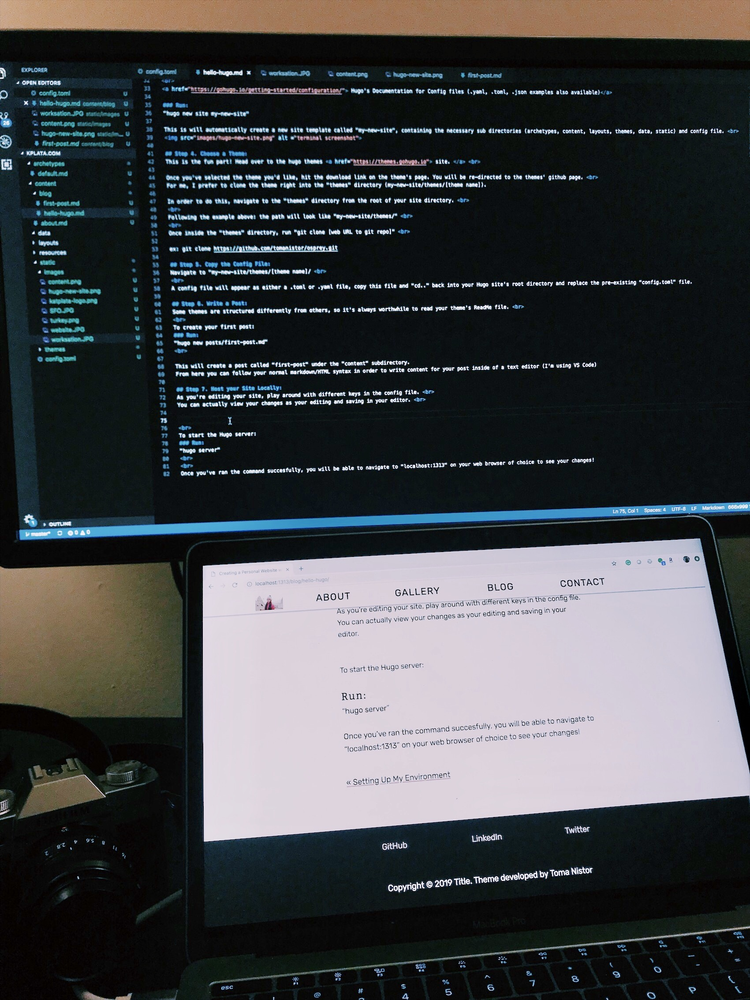

Since I have a few hours before my flight to Hanoi, I figured I have enough time to write a post and grab some food. About an hour ago I woke up at the Singapore Changi airport and thought to write a post on how I used Hugo to create this site.
Hugo is a static site generator that can be hosted anywhere (I’m using an S3 bucket). You can use CLI commands to create new websites and posts, or use your preferred text editor.
Step 1. Install Hugo via Homebrew
This is the easiest way to install hugo. If you don’t have homebrew already installed, check out this post.
Run:
“brew install hugo”
To verify installtion
Run:
“hugo version” Currently, I am using v0.49.2
Step 2. Create a workspace directory:
Create a new workspace folder for where you will be saving all of your site’s files!
Once you’ve created your directory, make sure you “git init” to initialize this as a git repo.
Step 3. Create a New Site:
Hugo sites are composed of a parent directory and many sub directories denoting the site’s structure. Among the sub directories is your config file. For this site, I am using a config.toml file ( Tom’s Obvious Minimal Language ), this file will serve as the “template” for your site and will contain important information such as your base URL and tab information.
Hugo’s Documentation for Config files (.yaml, .toml, .json examples also available)
Run:
“hugo new site my-new-site”
This is will automatically create a new site template called “my-new-site”, containing the necessary sub directories (archetypes, content, layouts, themes, data, static) and config file.

Step 4. Choose a Theme:
This is the fun part! Head over to the hugo themes site.
Once you’ve selected the theme you’d like, hit the download link on the theme’s page. You will be re-directed to the themes’ github page.
For me, I prefer to clone the theme right into the “themes” directory (my-new-site/themes/[theme name]).
In order to do this, navigate to the “themes” directory from the root of your site directory.
Following the example above: the path will look like “my-new-site/themes/”
Once inside the “themes” directory, run “git clone [web URL to git repo]”
ex: git clone https://github.com/tomanistor/osprey.git
Step 5. Copy the Config File:
Navigate to “my-new-site/themes/[theme name]/
A config file will appear as either a .toml or .yaml file, copy this file and “cd..” back into your Hugo site’s root directory and replace the pre-existing “config.toml” file.
Step 6. Write a Post:
Some themes are structured differently from others, so it’s always worthwhile to read your theme’s ReadMe file.
To create your first post:
Run:
“hugo new posts/first-post.md”
This will create a post called “first-post” under the “content” subdirectory. From here you can follow your normal markdown/HTML syntax in order to write content for your post inside of a text editor (I’m using VS Code)
Step 7. Host your Site Locally:
As you’re editing your site, play around with different keys in the config file.
You can actually view your changes as your editing and saving in your editor.

To start the Hugo server:
Run:
“hugo server”
Once you’ve ran the command succesfully, you will be able to navigate to “localhost:1313” on your web browser of choice to see your changes.